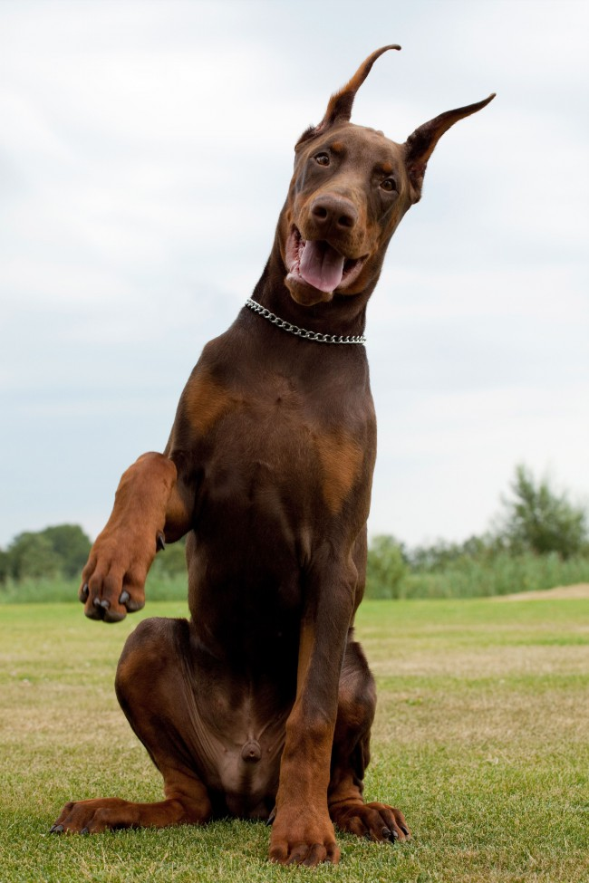

Доберман.

Прекрасный представитель породы
История породы
Доберманы были выведены в 19 веке в Германии Фридрихом Луисом Доберманном, в честь которого и была названа порода. Считается, что в создании породы участвовали ротвейлеры, короткошерстные овчарки, гладкошерстные немецкие пинчеры, черно-подпалые терьеры и с большой вероятностью доги, гончие и грейхаунды. Вопрос происхождения доберманов до сих пор полон загадок, так как Фридрих Доберманн не вел никаких записей о своей работе, а последующим селекционерам оставалось лишь строить теории.
Сегодня элегантные, умные и уравновешенные собаки с невероятным чутьем и нюхом служат в полиции и армии и считаются замечательными домашними любимцами, прекрасными собаками-компаньонами.
Подробнее об истории породы здесь.

Интересные факты:
- Изначально новая порода носила название «тюрингские пинчеры», а после смерти «отца» породы – Фридриха Доберманна – ее переименовали в доберман-пинчер. Впоследствии в 1949 году с одной из редакций стандарта из названия было убрано слово «пинчер», и собаки официально стали именоваться доберманами.
- Доберманов называли «жандармскими собаками».
- Доберманы – невероятно талантливые служебные собаки. Они работают в полиции и участвуют в сложнейших операциях. Одним из самых доблестных служителей порядка по праву считается доберман по кличке Треф. В начале 20 века он раскрыл свыше тысячи преступлений. К сожалению, хозяин собаки был убит. После этого несчастья Треф очень переживал и так и не вернулся к розыскной службе. Удивительно, но в дальнейшем сын Трефа по кличке Бер за 1,5 года раскрыл 65 преступлений. Для сравнения: за тот же срок умнейшая натренированная овчарка раскрыла всего 24 преступления.
- В 1944 году 25 доберманов отдали жизнь в борьбе за освобождение острова Гуам. В их честь на острове установлен памятник. Он носит название «Всегда верный».
- В стихотворении Сергея Есенина «Дай, Джим, на счастье лапу мне» идет речь о добермане, принадлежащем актеру Качалову.